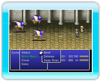
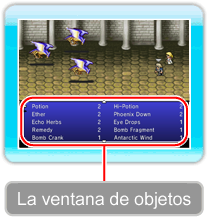
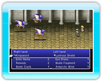
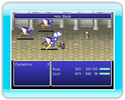

22 |
Cómo dar órdenes |
 |
|

Algunas órdenes de combate pueden ser llevadas a cabo por todos los personajes, mientras que otras (las habilidades) son propias de determinados miembros del grupo. Este apartado detalla las órdenes comunes, así como algunas habilidades concretas.
● "Attack" (Atacar) (común)Realiza un ataque físico con el arma que lleve equipada el personaje en ese momento. Tendrás que escoger al objetivo del ataque.

● "Items" (Objetos)(común) Usa un objeto de tu inventario. Selecciona un objeto y el objetivo con el cual usarlo.

Cómo cambiar de equipoPara ver los objetos que un personaje tiene equipados en las manos, pulsa arriba en ● "Band" (Maniobra) (común)Realiza una maniobra aprendida previamente o intenta aprender una nueva.
¿Qué son las maniobras?Una maniobra es un ataque combinado que llevan a cabo dos o más personajes a la vez. Podrás aprender nuevas maniobras a medida que avance la historia. También pueden descubrirse si se investiga durante el combate.
Cómo descubrir maniobrasPara descubrir una maniobra, selecciona "Band" (Maniobra) y "Search for Bands" (Descubrir maniobras). Tendrás que elegir los personajes que quieres que se unan y la orden de combate que quieres usar con cada miembro de la maniobra. Tras introducir las órdenes para todos los personajes participantes, pulsa

Cómo usar lasmaniobrasCuando hayas aprendido una maniobra, podrás realizarla con sólo seleccionar su nombre en el menú. Las maniobras consumen "MP" (PM) de todos los personajes involucrados.
● "Defend"(Defender) (común) Con esta maniobra te proteges y reduces la cantidad de daño que causan los ataques enemigos. ● "Swap Rows"(Cambiar líneas) (común) Esta orden intercambia los personajes entre las líneas trasera y delantera. Como la línea escogida para un personaje afecta al daño que éste recibe de los ataques enemigos (→ pág. 14), es muy útil cambiar las líneas rápidamente si los enemigos atacan por detrás (un ataque por la espalda).
● "White Magic"(Magia blanca)(habilidad) Lanza cualquier hechizo de magia blanca que hayas aprendido (→ pág. 24). ● "Black Magic"(Magia negra) (habilidad) Lanza cualquier hechizo de magia negra que hayas aprendido (→ pág. 24).  ● "Awaken"(Despertar) (sólo con Ceodore) Este movimiento maximiza tus "HP" (PV) y te da bonificaciones a las características durante un tiempo limitado. El efecto se disipa tras realizar una cantidad determinada de acciones y te deja con menos de 10 "HP" (PV).  ● "Cover"(Cubrir) (sólo con Cecil) Recibes daño físico en lugar de otros personajes.
 ● "Pray"(Rezar) (sólo con Rosa) Restablece una pequeña cantidad de "HP" (PV) y de "MP" (PM) a todos los aliados. Ten en cuenta que falla de vez en cuando.
|


 |
 |
 |